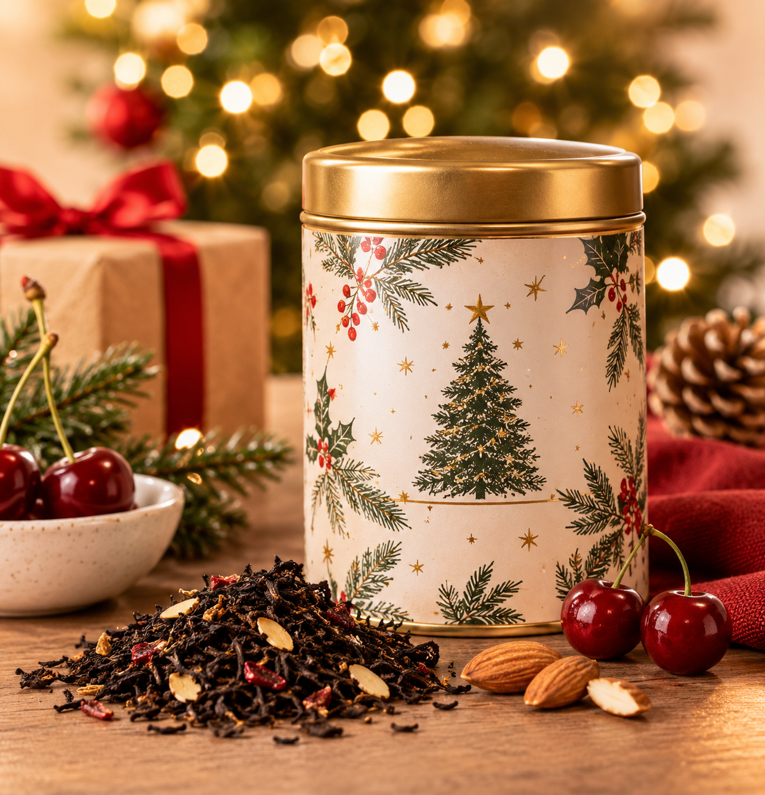
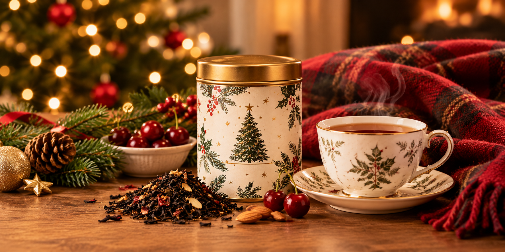
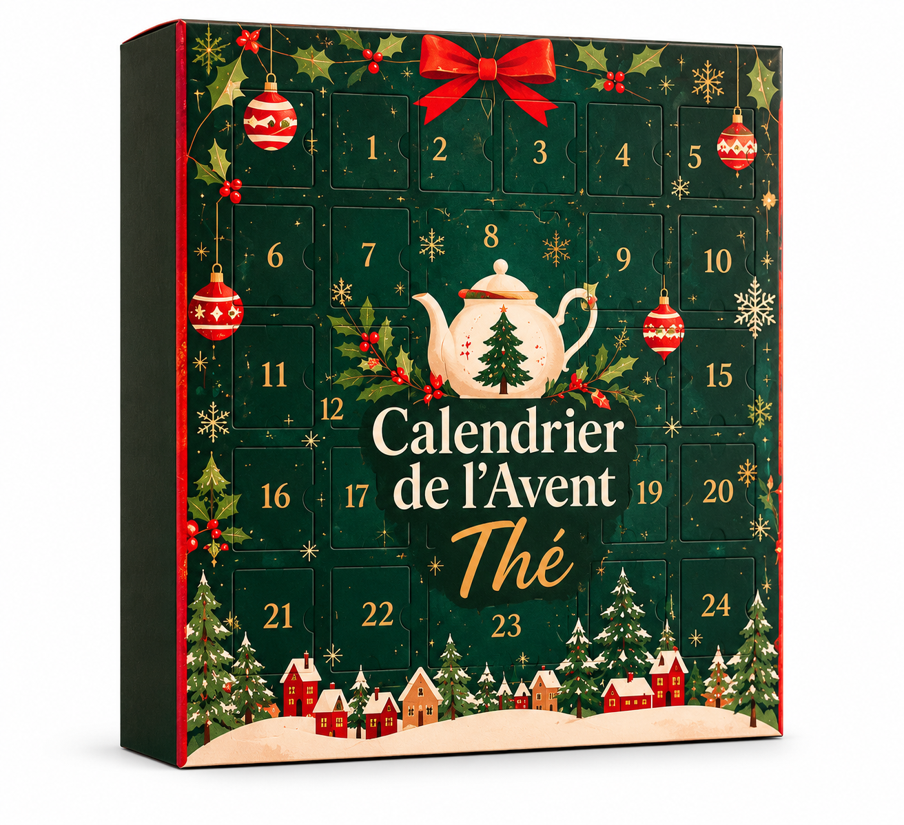

Thé de Noël, coffrets, calendrier de l'Avent : voici nos idées pour offrir le thé idéal selon les goûts de chacun.
Vous ne savez pas quel thé offrir ? Pour un gourmand, misez sur le Thé de Noël, un thé noir à l'amande et à la cerise. Pour un curieux, un coffret permet de goûter plusieurs saveurs. Et pour ceux qui évitent la théine, le rooibos se déguste même le soir.
| Pour qui ? | Notre idée | Pourquoi ? |
|---|---|---|
| Le gourmand | Thé de Noël® | Thé noir, amande & cerise |
| Le curieux | Coffret découverte | Plusieurs saveurs à goûter |
| Celui qui patiente | Calendrier de l'Avent | Un rendez-vous jusqu'à Noël |
| Sans théine | Rooibos & tisanes | Aucune théine, même le soir |
1. Pour le gourmand : le Thé de Noël
Pour une personne qui aime les saveurs douces et réconfortantes, le Thé de Noël® est un choix évident. Ce thé noir associe l'amande et la cerise : un mariage gourmand, parfait pour les après-midis d'hiver.
Il existe en 9 formats, dès 6,20 € : de la boîte métal de luxe au petit format, il s'adapte à tous les budgets, de la petite attention au cadeau principal.

Votre proche préfère les thés plus légers ? Pensez aussi au Thé des Neiges®, un mélange de thé blanc et de thé vert, pomme cuite et fruits rouges.

Légende : le Thé de Noël®, un classique des fêtes.2. Pour le curieux : un coffret découverte
Certains aiment avant tout explorer. Pour eux, un coffret est l'idée cadeau idéale : il permet de goûter plusieurs saveurs et de repérer celles qu'on adore, sans s'engager sur un seul thé.
La collection de Noël réunit plusieurs créations, du Thé de Noël® au Thé des Neiges®, en passant par l'Hiver Austral®, l'Étoile d'Orient® ou la Douceur des Cimes®. C'est aussi une bonne solution quand on ne connaît pas encore les goûts de la personne.
Un coffret, c'est l'occasion de goûter plusieurs saveurs.
3. Pour patienter : le calendrier de l'Avent
Pour faire durer le plaisir jusqu'au 24 décembre, le calendrier de l'Avent thé est un cadeau qui se savoure jour après jour. Nouveauté de la saison, il est proposé à 29,80 €.
Il se partage aussi très bien : en famille, entre amis ou entre collègues, il crée un petit rituel quotidien pendant tout le mois de décembre.

4. Sans théine : rooibos et tisanes
Tout le monde ne souhaite pas, ou ne peut pas, boire de théine. Pour ces personnes, tournez-vous vers le rooibos et les tisanes : ils n'en contiennent pas.
Le rooibos se déguste même le soir. Quant aux tisanes, elles accompagnent aussi bien les moments de détente que la routine de la journée : sommeil, bien-être, énergie… Il y en a pour tous les besoins.
5. FAQ
Quel thé offrir à quelqu'un qui n'aime pas la théine ?
Un rooibos ou une tisane : ils n'en contiennent pas.
Quel thé offrir quand on ne connaît pas les goûts de la personne ?
Le Thé de Noël®, gourmand, ou un coffret découverte qui permet de goûter plusieurs saveurs.
Peut-on offrir une carte cadeau ?
Oui, des e-cartes cadeaux Compagnie & Co sont disponibles sur la boutique en ligne.